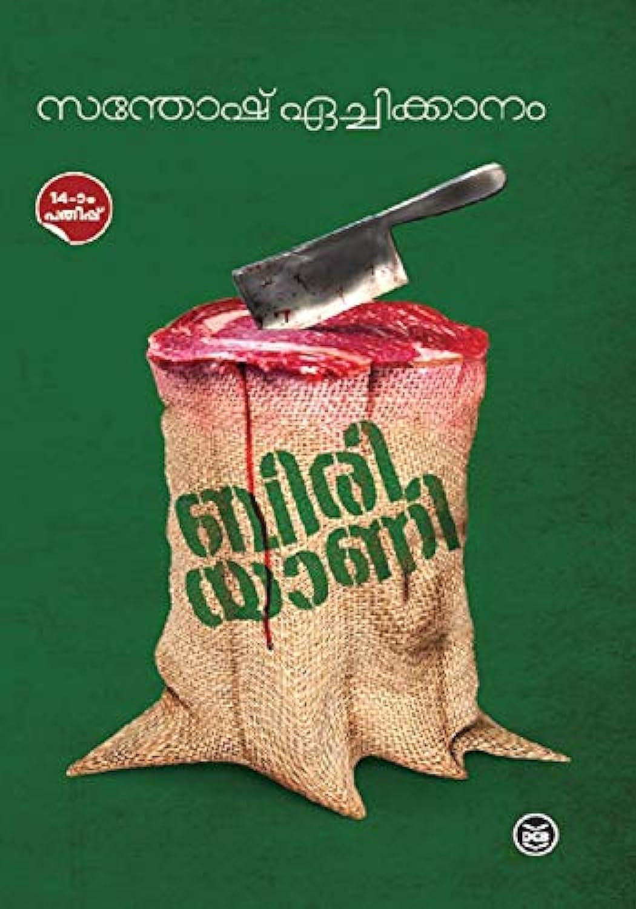

Author: സന്തോഷ് ഏച്ചിക്കാനം
Review by: ഷിജിൽ എം പി
അക്ഷരാർത്ഥത്തിൽ ഇതിൻ്റെ ലാസ്റ്റ് കവർപേജിൽ എം. മുകുന്ദൻ പറഞ്ഞതുപോലെ 'മലയാള ചെറുകഥകളുടെ ഉത്സവമാണ് ബിരിയാണി' എന്നു തന്നെ പറയാം.
ഇതിൽ ഏഴു കഥകളാണ്:
1. ബിരിയാണി
2. നായിക്കാപ്പ്
3. മനുഷ്യാലയങ്ങൾ
4. uvwxyz
5. മരപ്രഭു
6. ലിഫ്റ്റ്
7. ആട്ടം
ഇതിൽ ഏറ്റവും മുന്നിട്ട് നിൽക്കുന്നത് 'ബിരിയാണി' തന്നെ. വിശപ്പാണ് പ്രമേയം. മുൻപ് ദേശാഭിമാനി വാരികയിൽ 'ചിൽഡ് ബിയർ' എന്ന പേരിൽ വിശപ്പിനെ തന്നെ പ്രമേയമാക്കികൊണ്ടുള്ള ഇദ്ദേഹത്തിൻ്റെ തന്നെ ചെറുകഥ വായിച്ചത് ഓർമവരുന്നു. വിശപ്പിനെ എത്രമാത്രം സൂഷ്മമായും തീഷ്ണതയോടെയും ഒരു ചെറുകഥയിൽ ആറ്റിക്കുറുക്കി പറയാൻ പറ്റും എന്നതിന് ഉത്തമ ഉദാഹരണമായിരിക്കും 'ബിരിയാണി'.
ഈ പുസ്തകത്തിനവസാനം ഡോ. വി അബ്ദുൾ ലത്തീഫിൻ്റെ ഒരു അനുബന്ധ പഠനം കൊടുത്തിട്ടുണ്ട്. അതു കൂടി വായിച്ചു കഴിഞ്ഞാലാണ് വിശപ്പിനപ്പുറം 'ബിരിയാണി' എന്ന ചെറുകഥയിൽ ഒളിഞ്ഞിരിക്കുന്ന സാമൂഹിക പ്രസക്തി മനസിലാകുന്നത്.
നമ്മുടെ കേരളത്തിൽ ഒരു വലിയ വിഭാഗം മലയാളികളുടെ ജീവിതാവസ്ഥ മെച്ചപ്പെടുത്തിയതിൽ ഗൾഫ് കുടിയേറ്റത്തിന് വലിയ പങ്കുണ്ട്. അതിനു കാരണം ഗൾഫ് നാടുകളിൽ മലയാളികളെ മനുഷ്യരായി കണ്ട് സ്വീകരിച്ചതാണ് എന്ന ഗൾഫ് മനോഭാവത്തിന് വലിയ പങ്കുണ്ടെന്ന് പഠനത്തിൽ പറയുന്നു. ഇതേ പോലുള്ള മനോഭാവം മലയാളികൾക്ക് തിരിച്ച് കേരളത്തിലേക്ക് കുടിയേറിയ ബംഗാളികളോടുണ്ടോ എന്നാണ് ചോദ്യം.
ഇതിൽ എനിക്കിഷ്ടപ്പെട്ട കുറച്ച് വരികളുണ്ട്:
“നമ്മൾ ഒരാളോട് നമ്മടെ വേവലാതികൾ പറയുമ്പോ കേൾക്കുന്ന ആൾ അതേ തോതിലല്ലെങ്കിലും അങ്ങനെ ചില വേദനകളിലൂടെ ചെറുതായിട്ടൊന്ന് കടന്നുപോയിരിക്കുകയെങ്കിലും വേണം. അല്ലാത്തവരോട് പറയരുത്. പറഞ്ഞാൽ നമ്മൾ സ്വയം ഒരു കുറ്റവാളിയോ കോമാളിയോ ആയി തീരും.”- ബിരിയാണി
"പക ഓർമ്മയുടെ വിന്നാഗിരിയിൽ ഇട്ടുവച്ച കാന്താരി മുളകുപോലെയാണ്. കാലപ്പഴക്കം മൂലം ഇത്തിരി എരിവ് കുറഞ്ഞേക്കാമെങ്കിലും അതൊരിക്കലും നശിച്ചു പോകില്ല." - മനുഷ്യാലയങ്ങൾ
"ഈശ്വരൻ ഉണ്ടെങ്കിൽ അതുണ്ട്. അതിനെ പിന്നെ ഉണ്ടാക്കേണ്ട കാര്യമില്ല. ഉണ്ടാക്കിയാലല്ലേ പുതുക്കിപ്പണിയേണ്ട കാര്യമുള്ളൂ. പക്ഷേ, ചിലരതുണ്ടാക്കും. എന്തെങ്കിലും ഉണ്ടാക്കിയാലല്ലേ കച്ചോടം ചെയ്യാൻ പറ്റൂ" - മരപ്രഭു